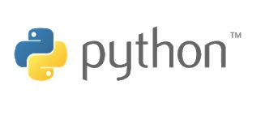

Python
Python adalah bahasa pemrograman interpretatif multiguna. Tidak seperti bahasa lain yang susah untuk dibaca dan dipahami, python lebih menekankan pada keterbacaan kode agar lebih mudah untuk memahami sintaks. Hal ini membuat Python sangat mudah dipelajari baik untuk pemula maupun untuk yang sudah menguasai bahasa pemrograman lain.
Bahasa ini muncul pertama kali pada tahun 1991, dirancang oleh seorang bernama Guido van Rossum. Sampai saat ini Python masih dikembangkan oleh Python Software Foundation. Bahasa Python mendukung hampir semua sistem operasi, bahkan untuk sistem operasi Linux, hampir semua distronya sudah menyertakan Python di dalamnya.
Dengan kode yang simpel dan mudah diimplementasikan, seorang programmer dapat lebih mengutamakan pengembangan aplikasi yang dibuat, bukan malah sibuk mencari syntax error.
ALUR KERJA PEMBUATAN PROGRAM PYTHON
- Membuat skrip python dengan teks editor
- Skrip python diterjemahkan ke dalam kode biner oleh (intepreter) python, sehingga komputer dapat mengerti arti perintah tersebut.
- Komputer mengerjakan perintah tersebut.
Cara mudah yang bisa digunakan untuk membuat script sebelum belajar bahasa Pemrograman Python ini diharapkan dapat memudahkan para pengguna supaya bisa lebih paham dan mengerti dengan segera tanpa menghabiskan waktu yang lama, cara yang bisa dilakukan adalah:
- Mode interaktif
- Mode Skrip
- Mode Idle
Mode interaktif ini secara umum sering dikenal commadline interpreter. Andaikan anda memakai Linux, pastinya anda juga mengerti Shell atau saat anda memakai Microsoft anda akan mengerti dan paham DOS. Mode satu ini cukup mudah serta bisa membantu anda untuk menguji maupun menjalankan berbagai script Python anda.
Anda dapat menjalankan bahasa Pemrograman Python dengan eksekusi langsung pada sebuah skrip program di bagian shell prompt. Anda dapat mengetikkan perintah, yaitu $ python script1.py.
Perintah tersebut bisa mengeksekusi berbagai skrip script1.py dengan langsung direktori yang telah aktif saat ini. Anda dapat membuat dahulu file script1.py setelah itu simpanlah di folder kerja. Saat menulisakan sebuah kode script1.py gunakannya Text Editor yang sudah disediakan Linux.
Bahasa Pemrograman Python bisa dijalankan di berbagai mode grafik yang dikenal mode IDLE. Dengan basisnya yaitu Tkinter, saat anda menjalankan itu harus intall dahulu Tcl/Tk.IDLE menjalankan langsung folder /usr/lib/Python2.7/idlelib/.
TIPE DATA PYTHON
- Boolean :Menyatakan benar True yang bernilai 1, atau salah False yang bernilai 0
- String :Menyatakan karakter/kalimat bisa berupa huruf angka, dll (diapit tanda " atau ')
- Integer :Menyatakan bilangan bulat
- Float :Menyatakan bilangan yang mempunyai koma
- Hexadecimal :Menyatakan bilangan dalam format heksa (bilangan berbasis 16)
- Complex :Menyatakan pasangan angka real dan imajiner
- List :Data untaian yang menyimpan berbagai tipe data dan isinya bisa diubah-ubah
- Tuple :Data untaian yang menyimpan berbagai tipe data tapi isinya tidak bisa diubah
- Dictionary :Data untaian yang menyimpan berbagai tipe data berupa pasangan penunjuk dan nilai